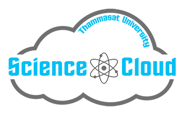
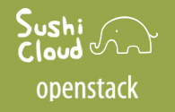
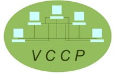

WELCOME TO vasabiLab
vasabiLab stands for “Virtualization Architecture and ScalABle Infrastructure” Laboratory. Our goals are to conduct research in the area of computer virtualization and invent new software systems that implement advanced capabilities to tackle distributed computing problems under abstractions provided by virtual machines.
Past projects in our laboratory are:

Science Cloud, Thammasat University
The Science Cloud project aims to create a Cloud Computing infrastructure to support computational research at Thammasat University. The project is built using the opensource OpenStack Cloud management software. The system is currently being used for scienctific computation, software developments and class room instructions.

SushiCloud Openstack Project
The SushiCloud Openstack project intends to build a public Cloud platform based on the open source Openstack software to facilitate advanced studies and analysis of
Cloud computing. The project will also serve as an experimental platform for the integration of fault-tolerance software components and the open source public Cloud system.
VMiCh: Virtual machine Migration and Checkpointing system
The VMiCh system is a modified Kernel Virtual Machine (KVM) software that incorporates our Thread -based Live Migration (TLM) and Thread-based Live Checkpointing (TLC) capabilities. The highlights of the TLM and TLC capabilities are the abilities to perform live migration and checkpointing efficiently especially for Virtual Machines with multiple vcpus and large memory size.

The Virtual Cluster-based Coordinated checkpointing Protocol (VCCP)
The Virtual Cluster-based Coordinated checkpointing Protocol (VCCP) project is an attempt to build a "virtual cluster" framework to represent a cluster of virtual machines, and incorporate a coordinated checkpointing mechanism into it. VCCP allows coordinated checkpointing to operate transparently on the virtual cluster without application, operating systems, or hardware modifications.